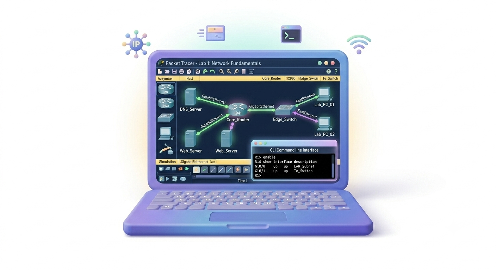
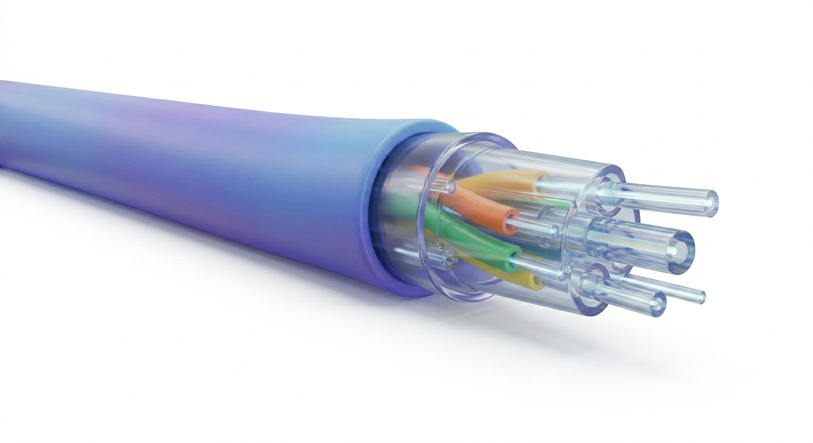
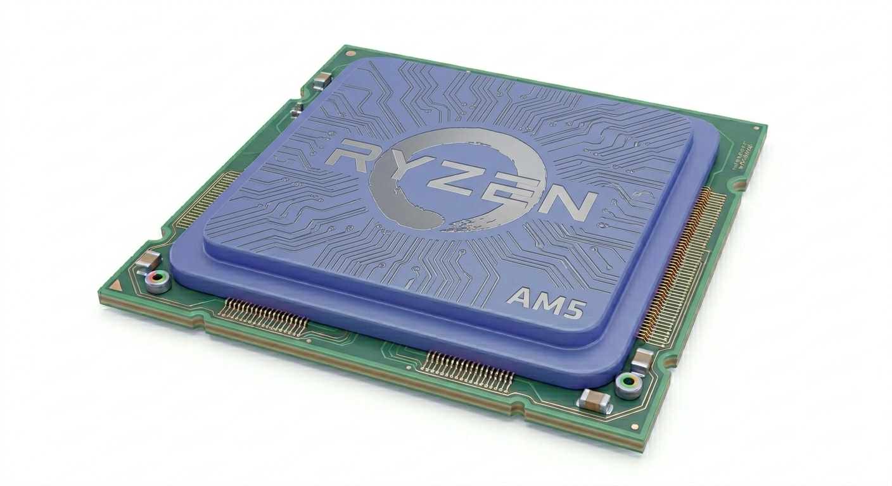
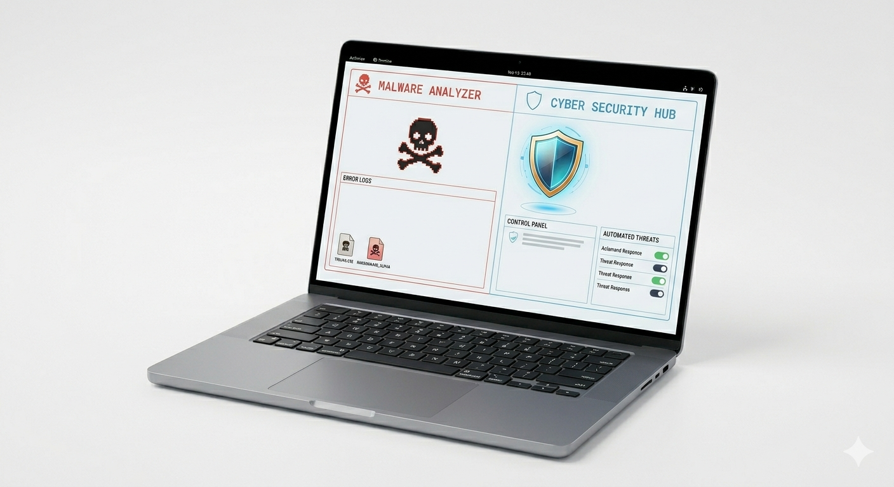

Tema 1: Cisco Packet Tracer: Del Laboratorio Virtual a la Infraestructura Real
Cisco Packet Tracer es una potente herramienta de simulación que permite diseñar, configurar y diagnosticar redes de datos en un entorno virtual seguro. Su alto realismo emula de forma precisa el comportamiento del sistema operativo Cisco IOS.
Ver Más
Tema 2: Fibra Óptica: El Poder de la Información a la Velocidad de la Luz
A diferencia de los cables de cobre tradicionales, la Fibra Óptica es una tecnología que utiliza filamentos de vidrio o plástico tan delgados como un cabello para enviar grandes cantidades de información mediante pulsos de luz.
Ver Más
Tema 3: El Cerebro Digital: Arquitectura, Fabricación y el Futuro de los Microprocesadores
Descubre el asombroso proceso de fotolitografía nanométrica sobre obleas de silicio que permite meter miles de millones de transistores en un chip, y cómo las arquitecturas modernas impulsan la Inteligencia Artificial.
Ver MásTema 4: Linux: El Motor de la Infraestructura Tecnológica Mundial
Nacido bajo la filosofía del código abierto, Linux es hoy en día el núcleo modular indispensable que domina el entorno de servidores mundiales, la ciberseguridad y las operaciones globales de infraestructura.
Ver Más
Tema 5: Amenazas Silenciosas: Cómo se Propaga el Malware y cómo nos Defiende la Ciberseguridad
Entiende los vectores avanzados de infección como los ataques "Drive-by Download" y el efecto dominó en las redes corporativas, así como las defensas esenciales heurísticas y basadas en IA.
Ver Más